Gate Mudaliyar Arumugampillai Kumaraswamy:
Gate Mudaliyar Arumugampillai Kumaraswamy:
Jaffna Monitor hellojaffnamonitor@gmail.com 59 T he British brought Sri Lanka completely under their control in 1815. The British needed a political system and a parliamentary administration to govern Sri Lanka. A commission was established in 1829 under the leadership of William Colebrooke and Charles Cameron to examine these arrangements. The system they proposed is known as the Colebrooke-Cameron Reforms. The First Indigenous Representatives According to the Colebrooke Reforms, the Legislative Council, consisting of 15 members, was established. It included 9 official members and 6 unofficial members. Among the 6 unofficial members, there were 3 Europeans, 1 Sinhalese, 1 Tamil, and 1 Burgher. Based on that, Arumugampillai Coomaraswamy was appointed as the first Tamil representative in the legislative tradition of Sri Lanka, J.G. Phillips Panditeratne1 (Johannes Godfried Phillipz Wijekoon Panditeratne) was appointed as the 1 Phillips Panditaratne was a member from 14.05.1837 to 1843. first Sinhalese member, and J.C. Hillebrand (J.G. Hillebrand) was appointed as the first Burgher member.2 At that time, Coomaraswamy was serving as the translator for the Commissioner of the Revenue Department. Phillips Panditeratne was serving as the Sinhalese translator for the Supreme Court. 2 Lakshmi Kiran Daniel - Privilege And Policy: The Indigenous Elite And The Colonial Education System In Ceylon, 1912-1948 - Faculty of Modern History, Michaelmas Term, 1992 Gate Mudaliyar Arumugampillai Kumaraswamy: By: Sarawanan Komathi Nadarasa The First Parliamentary Representative of Sri Lankan Tamils

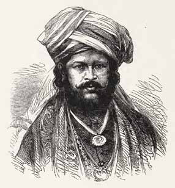
Jaffna Monitor hellojaffnamonitor@gmail.com 60 Interestingly, S.W.R.D. Bandaranaike, a significant political figure, descended from the lineage of J.G. Philipsz Panditaratne. During this period, elections had not been introduced to Sri Lanka, so the Governor had the practice of selecting anyone he desired at his discretion. Governor Sir Robert Wilmot- Horton found it easy to appoint the 9 official members. However, finding and selecting the 6 unofficial members was challenging. He easily found the three Europeans and one Burgher. But, unable to find the remaining two representatives, the first meeting on 01.10.1833 convened without any Sri Lankan indigenous members. The then Secretary of State for the Colonies rebuked this situation. Subsequently, in haste, the Governor retired his chief translators, Arumugampillai and Philipsz Panditharatne, with full pay and appointed them as unofficial members on 30.05.1835. Arumugampillai was the Chief Mudaliyar, and Philipsz Panditaratne was a Mudaliyar.3 Accordingly, he was the first representative of Sri Lankan Tamils and Muslims.4 He can also 3 K.C.Kularatnam - "From North to Gopalla" (Tamil) Aaseervatham Press - Book Shop - Jaffna 1966 4 T.Duraisingam - Politics and life in our times - Vol - II - Printed in the Democratic Socialist Republic of Sri Lanka at Unie Arts (Pvt) Limited – 2000 -John H. Martyn - Notes On Jaffna- Chronological, be considered the first Indigenous member in the parliamentary history of Sri Lanka. At that time, the Tamil and Muslim communities were represented under the identity of Tamils, so Arumugampillai served as the representative of the Muslims as well. Later, Sir Ponnambalam Ramanathan, who came from the same lineage, argued against the demand for separate representation for Muslims, which is another story altogether. Name Confusion It is observed that his name is called by various confusing names by many. In the famous book "North to Gopallawa" (1966) by K. C. Kularatnam, he is called Arumugatha Pillai. M. Vaithilingam, who wrote the biography of Sir Ponnambalam Ramanathan (The Life of Sir Ponnambalam Ramanathan - 1971), refers to him as "Arumuganathapillai" in several places.5 In the books of A. J. Wilson, he is also called "Arumuganathapillai." In the "Dictionary of Biography of the Tamils of Ceylon" (1997) compiled by S. Arumugam, he is mentioned as Arumugampillai. V. Muthukumaraswamy, in his book "Founders of Modern Ceylon Eminent Tamils" (1973), also wrote a chapter Historical, Biographical - etc. - American Ceylon Mis- sion Press Tellippalai Ceylon - 1923. 5 A. J. Wilson - Sri Lankan Tamil Nationalism: Its Ori- gins and Development in the Nineteenth and Twenti- eth Centuries - 2000)
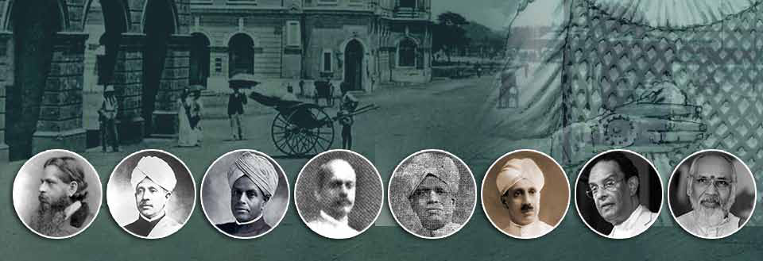
Jaffna Monitor hellojaffnamonitor@gmail.com 61 referring to him as Arumugampillai. Let us also call him Arumugampillai Kumaraswamy. Biography Gate Mudaliar Arumugampillai Coomaraswamy was born in 1783 in the village of Kerudavil in Point Pedro (Paruthithurai), Sri Lanka. His elder brother, Variththampi, settled in the Chekkatti Street area of Colombo and became a prominent merchant. He then moved to Aamaithottam in the Mukhathuvaaram area and lived there.6 The Ponnambalam family, who later became influential political leaders centered in Colombo, started from here. At that time, areas like Kotahena, central Colombo, and Colombo North were centers where prominent aristocrats and merchants of Sri Lanka lived. Only later did the Kuruwatta area, today's Colombo 7, become a center for high-class influential aristocrats. The Ponnambalam family also moved to Colombo 7. In 1795, the British captured the Trincomalee Fort from the Dutch. The forts in Jaffna, Kalpitiya, and Negombo also surrendered. Following this, the then-Dutch Governor was 6 V.Muttucumaraswamy - Founders of Modern Ceylon (Sri Lanka) Eminent Tamils - Vol I. Parts I & Ii The Pioneers - The Founders prepared to hand over the forts in Kalutara, Galle, and Matara to the British. Finally, in 1796, Colombo naturally fell into the hands of the British. During the period when full control was being established in Sri Lanka, the Governor from Madras managed Sri Lanka's administration. Variththampi was involved in identifying and importing numerous personnel from South India for administrative work. At that time, he brought 13-year-old Coomaraswamy to Colombo and cared for him. By order of the King of England, it was decided to appoint a separate governor to manage Sri Lanka as a distinct colonial state. Accordingly, the King appointed Frederick North as the first governor in October 1798. However, until it was officially confirmed in 1802 that Sri Lanka was formally under the British Crown, Sri Lanka operated under the authority of the Governor of India. Frederick North made several changes upon his arrival. There was an immediate need to establish a school for the education of the children of both the aristocrats and the English administrators. This school was established in Colombo on 28.10.1799. At the same time, the British recognized the long-term need to
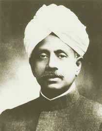
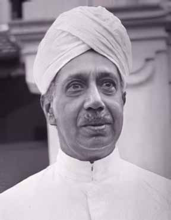
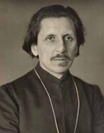
Jaffna Monitor hellojaffnamonitor@gmail.com 62 develop local talent for their administrative needs. A section was created with 18 Sinhalese students in the northeast corner of the Wolvendaal Church in Colombo. Although a Tamil section was also created by Father Schroter, only a few attended. Arumugampillai Coomaraswamy was admitted to the school within a year of its establishment. Coomaraswamy's exceptional abilities quickly led him to successive advancements. Service Rendered In 1805, he was appointed as a translator in the Colombo Fort Court. Three years later, Richard Plasket, then the Deputy Secretary of the Government, certified Coomaraswamy as a skilled talent. In 1808, Coomaraswamy was appointed as a translator for Governor Thomas Maitland. Later, in May 1810, he was promoted to the Chief Tamil Translator to the Governor and was awarded the title of Mudaliyar. At that time, he was only 26 years old. During this period, many recorded a shadow conflict between the Chettiar community, which had migrated from South India, and the Saiva Vellala community of Jaffna. M. Vaithilingam, who wrote the biography of Sir Ponnambalam Ramanathan, also recorded how Coomaraswamy maintained his position with the support of the Vellala community during this struggle.7 For over a century, the descendants of Coomaraswamy, who had come from Jaffna, remained in Colombo and wielded influence in national politics. It was only after a century, having been disappointed by the Sinhalese leadership, that they returned to their ancestral land in Jaffna. This occurred around the 1920s, which is another story. In the early 1800s, the influence of the Chettiar community, which had established itself as a trading community in Colombo, also grew. In 1830, Coomaraswamy was elected as the leader of the "non-Christian Tamils" in the capital city of Colombo. This election took place in the Provincial Secretariat. Thiyagappa, a prominent figure in the arrack production industry and an influential member of the Chettiar community, competed against Coomaraswamy. This election was, in a way, a peaceful fight between the Saiva Vellalar and Saiva Chettiar communities. In 1815, during the capture of King Sri Vikrama Rajasinha of Kandy by the British, Coomaraswamy played a significant role as a translator for the British. During this period, Arumugampillai was sent along with the army dispatched to capture Kandy as a direct officer of the Governor. In February 1815, he traveled with the army from Colombo for 14 days. When the King of Kandy, Sri Vikrama Rajasinha, was captured and sent to Colombo, Coomaraswamy was assigned to assist in exiling the king and his relatives to Vellore. 7 M. Vythilingam -The Life Of Sir Ponnambalam Ra- manathan Vol.I, Ramanathan Commemoration Soci- ety - Colombo 1971
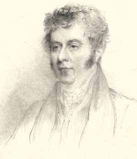
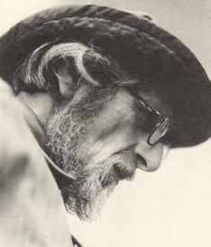
Jaffna Monitor
hellojaffnamonitor@gmail.com
63
Abolition of Slavery
The slavery system, which had continued
during the Portuguese and Dutch periods,
persisted into the early period of British rule as
well. Many individuals in the country owned
slaves as property. Families were sold together,
or children were separated from their fathers,
children from their mothers, and husbands
and wives were cruelly separated and sold
individually. During this period, there were a
total of 28,000 slaves on the island of Sri Lanka
alone. Among them, 22,000 slaves were in
Jaffna and Trincomalee. The price of a male
slave was 17 rupees, and the price of a female
slave was 34 rupees. It is also noteworthy that
slavery was abolished in Mauritius and the
West Indies in 1833.
In commemoration of the birthday of the
Prince Regent of England, a large list of
prominent Sri Lankans who signed in support
of the abolition of slavery on 12.08.1816 can be
found (Ceylon Ordinances - 1853).8 Notably,
those who signed were divided according to
8 A Collection Of Legislative Acts Of The Ceylon
Government From 1796: Colombo - William Skeen,
Goverment printer, Ceylon - 1853
their castes. These groups included Vellalar,
Karaiyar, Vannar, and Chettiar, among others.
This list, which contains nearly a thousand
signatures, was divided by region, caste, and
ethnicity.9 Among the signatories in the list of
Colombo Malabars (Colombo Tamils) is the
name of Arumugampillai Coomaraswamy.
The details of the gradual liberation of slaves
from various regions have also been published.
In the late 1819s, the courts of that time
intervened and liberated slaves belonging
to the Pallars, Koviyars, and Nalavars
communities in the Jaffna and Trincomalee
areas. These details are explained on the pages
of the report as mentioned earlier.
Praise from the British
In recognition of Arumugampillai
Coomaraswamy's service, Governor Robert
Brownrigg awarded him a medal and a gold
necklace in 1819. The inscription on the medal
reads as follows: "This medal is presented
9 In this list, Tamils are referred to as Malabaris. You
may be aware that during the Portuguese period and
later during the Dutch period, Tamils were recorded
as Malabaris in most places. Similarly, when they re-
ferred to the Sinhalese as Sinhalese, they did not refer
to them as "Sinhalese" as they do today."Cingalese."
Kumaraswamy family's political journey till date
Name
Lifetime
In the power
Arumugampillai Coomaraswamy
1783 - 07.11.1836
30 May 1835 – 07.11.1836 until death
Ethirmannasingham
1846-1861
Muthu Coomaraswamy
23.01.1834 – 04.05.1879
1861–1879 until death
Sir Ponnambalam Ramanathan
06.04.1851 – 26.11.1930
(1879–1930)
Ponnambalam Coomaraswamy
07.12.1849 - 07.06.1906
(1892-1898)
Ponnambalam Arunachalam
14.09.1853 – 09.01.1924
1912-1913
S.Nadesan
21.05.1895 – 15.01.1965
1934–1947, 1952–1956
Arunachalam Mahadeva
05.10.1885 – 15.04.1966
1934–1947
Sir S. Pararasingam
25.06.1896- ?!
1954 (Senator)
T.M.Swaminathan
30.04.1945-
2010-
C.V.Wigneswaran
23.10.1939-
2013 - Chief Minister (NP)
Jaffna Monitor
hellojaffnamonitor@gmail.com
64
to Arumuganathapillai Coomaraswamy
Mudaliyar by the Honorable Sir Robert
Brownrigg, Governor, during his term of
office, in appreciation of his distinguished
and satisfactory public service as the Chief
Translator of the Government."10
Coomaraswamy married Visalatchi, and they
had two children, Muthu Coomaraswamy and
Sellachi. Muthu Coomaraswamy was the father
of Sir Ananda Coomaraswamy. Sellachi's
children were Ponnambalam Coomaraswamy,
Sir Ponnambalam Ramanathan, and Sir
Ponnambalam Arunachalam.
Arumugampillai also served under Governor
Sir Edward Paget (1822-1824) and Governor
Sir Edward Barnes (1824-1831).
Death
Although Arumugampillai Coomaraswamy
was appointed to the Legislative Council in
1835, he could not attend the subsequent
session. He passed away on 07.11.1836.11 Thus,
he held the position for approximately one
and a half years. The history of the political
power structure of that time confirms that no
member of that first Legislative Council could,
or did, play a significant role as a political
representative. However, he holds the honor
and record of being the first Indigenous
member. His contributions to civil service were
notable and historically significant. Likewise,
his successors continued to fill his place.
10 M. Vythilingam -The Life Of Sir Ponnambalam
Ramanathan Vol.I, Ramanathan Commemoration
Society - Colombo 1971
11 This date can be obtained in V.Muttucumaraswamy
- Some Eminent Tamils – Department of Hindu &
Cultural Affairs (1992), while K.C. Kularatnam in
North First Gopallawa states that his date of death is
14.05.1837.
After his death, Governor Robert Horton
delivered an emotional eulogy for him on
07.11.1836.12 The Governor faced difficulties
in selecting another person to fill his position.
For one and a half years, Coomaraswamy's
position remained vacant. Finally, the
Governor appointed Simon Cassie Chitty, a
distinguished civil service officer and scholar
from Kalpitiya, who retired from his post to
become the unofficial Tamil representative.13
After Coomaraswamy, Simon Cassie
Chitty was appointed, followed by
Arumugampillai Coomaraswamy's son-
in-law, Edirmannasingham Mudaliyar.
Subsequently, his son Muthukumaraswamy
and later his son-in-law Ramanathan were
appointed. After them, Coomaraswamy's
descendants continued to be appointed. The
Coomaraswamy family provided political
representation in Sri Lanka from the time
of the first political reform, the Colebrooke-
Cameron Reforms, to the period of the
Donoughmore Reforms.
The seed that Coomaraswamy planted in
the political history of Tamils in Sri Lanka is
remarkable when considering the political
milestones influenced by his family's impact
over the past one and a half centuries. The
political transformations brought about by
their influence are astonishing. We do not
know as much about those who came after him
as we do about him.
12 S.Arumugam - Dictionary of Biography of the tam-
ils of Sri Lanka – London - 1996
13
In those days the appointees were permanent
members, no election, no term of membership, and
the appointment and extension were at the pleasure of
the Governor.
Jaffna Monitor hellojaffnamonitor@gmail.com 65 That Face Story Translated from the original Tamil short story anta mukam (me;j Kfk;) by M. S. Kanakaratnam which appeared in the July 1959 issue of the magazine kalaimati (fiykjp) Translated by: Eḻuttukkiṉiyavaṉ (vOj;Jf;fpdpatd;) T he melody of the harmonium blending with the rhythms of the percussion instrument mridangam wafted through the air. The cacophonous voice of the background singer followed, over the loudspeaker. These were the signs foretelling the imminent arrival of the popular sinnamēḷam dance
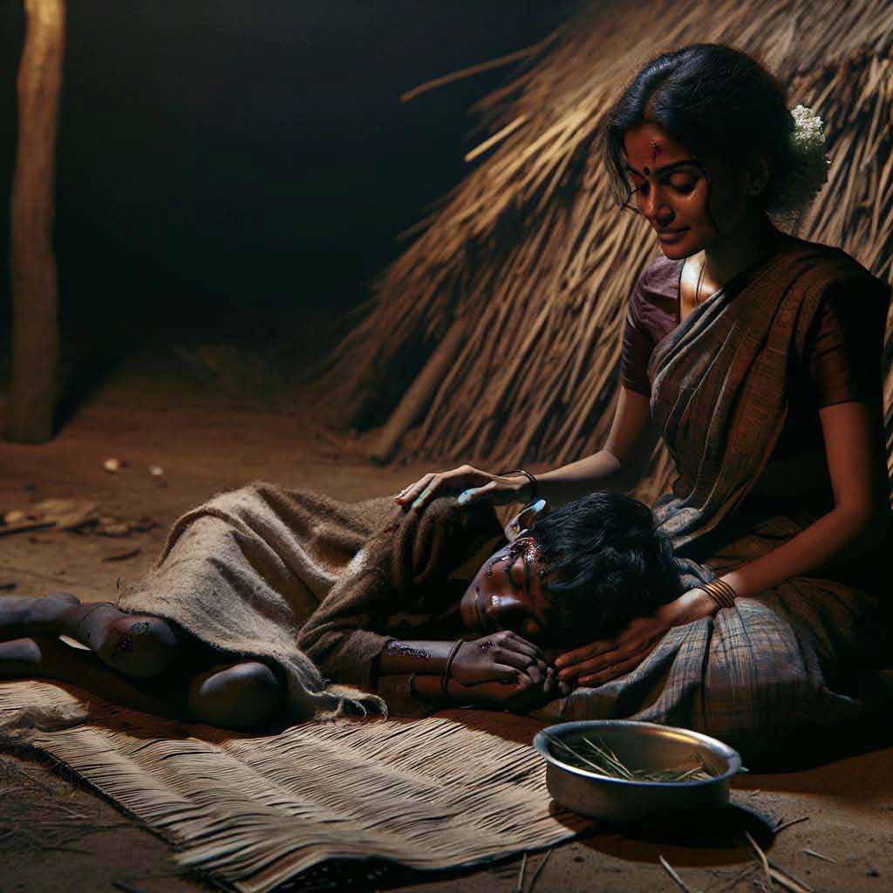
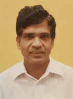
Jaffna Monitor hellojaffnamonitor@gmail.com 66 performance. A sudden bustle started to sizzle among the temple-goers. People who were bored by the mēḷaccamā— the playful back-and-forth between the thavil drummers—and were lounging on their sālvais spread out on the sand, woke up abruptly and started to swarm towards the temple hall. Commotion and cheering ensued. What the crowd had been staying awake for in this cold weather until two in the morning, was about to begin. The temple hall was filled within half a second. Crowds teemed everywhere. The famous Kamalā-Vimalā dance troupe was set to perform that day. No wonder that the hall was full. The sound of salaṅkai-the ankle ornament with little bells-drifted over. The entire crowd forgot to blink and turned their heads towards the direction whence the salaṅkai sound came. Two dancers walked towards the center of the stage, elegantly like swans. Once they reached the center, they glanced around at the crowds surrounding the center stage and graced them with a smile. The smile had the power to enchant every single person in the audience. “aaḷai aaḷaip pārkkiṟār ….,” the loudspeaker started blaring a popular cinema song. The dance began. As the harmonium player kept the tune and the mridangam drummer showcased his skill, the two dancers twisted and swirled. Their contortions captivated the hearts of the audience and enthralled them. The crowd jostled expectantly, hoping to catch a glimpse of the sinnamēḷam dance. Outside, under a tree a little distance away from the temple building, there was a crowd that had come to witness the festivities. Surely, they, too, would want to enjoy the dance performance, wouldn’t they? They would, with all their heart. But … They could not step inside the temple with the others to participate in the festivities. They did not have that privilege. They were dalits, people from the downtrodden, segregated, lower castes … They could not see anything that was going on within the temple. They merely heard the songs and the sounds of salaṅkai over the loudspeakers. From the sounds, they had to fill in the gaps by imagining the dance performance. 2 Kandasāmi was dissatisfied. He had stayed up till two in the morning to watch the sinnamēḷam performance. How could he instead settle for merely watching the backs of the thronging masses from a distance? He fumed at his mother Vaḷḷi. He wanted to go near the temple to get a better look at the dance performance. But she had forbidden it, absolutely. She, too, was angry at him. When all the poor souls under the tree were content to enjoy the festivities from a distance, why was he so impatient?
Jaffna Monitor hellojaffnamonitor@gmail.com 67 No one could fault him. He was just an eight-year-old tot who did not understand the intricacies and goresqueness of societal conventions. Vaḷḷi had been very firm. He was not to move even an inch from where he was standing. Kandasāmi was equally firm: he had resolved to himself that he would somehow give his mother the slip to go watch sinnamēḷam. When Vaḷḷi dozed off momentarily, Kandasāmi saw his chance and made his move. He rushed towards the temple and blended into the crowd that was enjoying the dance. But no matter how he allowed himself to be crushed and trodden on, he could not see what was going on inside. He circled the crowd to no avail. Frustrated, he was ready to give up and return back to where he came from, when he spotted a good vantage point. There, in the women’s section, on the side of the ceremonial temple flagpole. Somehow, he reached that spot, climbing over some people, being trodden on by others, and squeezing himself through between yet others. As he sat there and watched the dance, he marveled at its novelty and beauty.
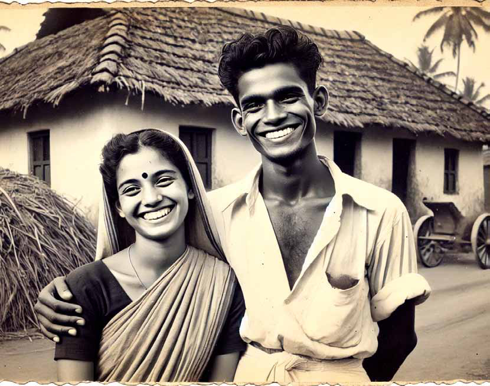
Jaffna Monitor hellojaffnamonitor@gmail.com 68 He was thoroughly absorbed in enjoying the performance. Then - “Dēy, you low-caste scoundrel, who let you in. Get out at once, you dog…” - This was the voice of vithāṉaiyār Veluppiḷḷai, the government official in the village. Kandasāmi did not remember what happened thereafter. He was dragged outside brutally. Everyone had a go at him. They beat him until he fainted. Someone dragged Vaḷḷi by her wrist to where he lay. - “Look at what your kid has done. He has stepped inside the temple…. The devil…..” - “He has done something that no one has ever done before…..” - “How can we continue the festival without a ritual atonement?.....” Vaḷḷi’s world was spinning around her…. Kandasāmi lay unconscious on the ground, like a corpse. Blood was oozing out of his face and mouth, making his tender face look grotesque. No one sympathized with his situation. Instead, there was plenty of abuse, scorn, and swearing…. But it did not stop there. -“Take him away, the devil, the dog…,” vithāṉaiyār Veluppiḷḷai again kicked the curled up body of Kandasāmi. Even after Kandasāmi was unconscious, oblivious to everything around him, vithāṉaiyār’s anger did not subside. “Vaḷḷi, I am letting him go just for your sake, just for the sake of your face. Had he been anyone else’s child, he would be lying dead now for what he has done… I held myself back for your sake…. Mmm.. lift him up,” he growled. Like a lifeless machine, Vaḷḷi lifted Kandasāmi over her shoulder without uttering a word, and walked away. 3 Kandasāmi lay on a torn straw mat, moaning. Vaḷḷi sat next to him, gently stroking his body. They had no one to help them…. They only had each other. Vaḷḷi’s husband Siṉṉathampi had passed away two years earlier. Vaḷḷi stared at Kandasāmi’s face. That face…. -The memory brought out a surge of sadness in her. Tears streamed down her cheeks. The face rekindled long-forgotten memories. The memories trampled on by time slowly raised their heads. Her thoughts zoomed back to several years prior. It must have been just a year or two after Siṉṉathampi married her. Her beauty and his masculinity entwined in each other. They led a happy life. The livelihood of that family depended entirely on vithāṉaiyār Veluppiḷḷai. Siṉṉathampi worked his land. Vaḷḷi did his household chores. Veluppiḷḷai paid very little for their work. They were used to living their lives within that meager income. That day, vithāṉaiyār had sent Siṉṉathampi off to another village on some errand.
Jaffna Monitor hellojaffnamonitor@gmail.com 69 Vaḷḷi would have had to sleep alone that night. When she finished her chores and prepared to leave, vithāṉaiyār said, “Why don’t you sleep here, Vaḷḷi? How would you sleep at home, alone without anyone to help?” “No, sāmi… why would I need any help… I can sleep alone.,” Vaḷḷi said as she left. At around eleven that evening, Vaḷḷi shut her front door tight, put the lamp out, and was about to go to bed. She heard someone calling out her name. “Vaḷḷi … Vaḷḷi …” Who would that be? It sounded like the voice of vithāṉaiyār. She opened the door a little. She was right, vithāṉaiyār Veluppiḷḷai stood outside. “Why sāmi… at this hour?” “Nothing. You were going to go to bed alone. I came to check if you were afraid…” Vaḷḷi was overcome with joy. What a kindhearted person! Vaḷḷi came out onto the front yard. The blackness of the moonless night reigned supreme.It was then that it happened.
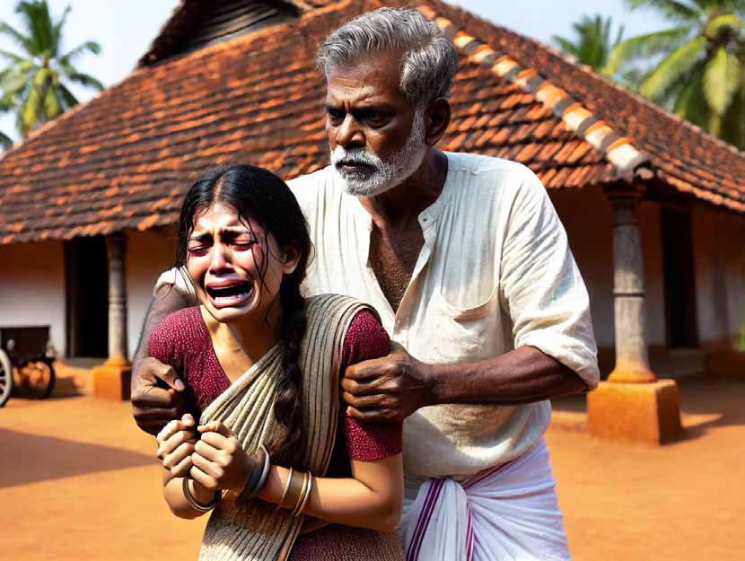
Jaffna Monitor hellojaffnamonitor@gmail.com 70 “Vaḷḷi,” Veluppiḷḷai said, as he grabbed her wrist. She instantly understood the reason for his visit, and the hidden motive that lurked beneath his kindness. She jerked her wrist free and ran inside the house. Like lightning, he followed her inside. Then? …. She sobbed into her pillow until dawn. She wept until the sorrow within her heart was exhausted. 4 Kandasāmi’s moaning put an end to Vaḷḷi’s reverie. She chastened herself for allowing her stray thoughts to confuse her mind. Even in the middle of his unbearable pain, a gentle smile formed on Kandasāmi’s lips. That face… that smile… - It was as if vithāṉaiyār Veluppiḷḷai stood there smiling. Arun Siddharth has been appointed as the chief organizer for the Jaffna district by the Mawbima Janatha Party. This appointment was made during a lively event held in Colombo under the leadership of the party's chairman, Dilith Jayaweera. Arun Siddharth, who had recently joined the United National Party (UNP), decided to switch allegiances to the Mawbima Janatha Party. When asked about his decision, "The UNP party sidelined me based on caste," he claimed. "That is why I left. The decision to join the Mawbima Janatha Party was driven by the pursuit of effective resolutions to combat oppression." Siddharth didn't mince words about his former party. He promised to reveal the caste-based elements within the UNP and said that he wouldn't spare anyone, not even Ranil Wickremesinghe, the President of Sri Lanka and leader of the UNP. Monitor Memo Arun Siddharth Switches Teams, Promises to Spill the UNP Tea